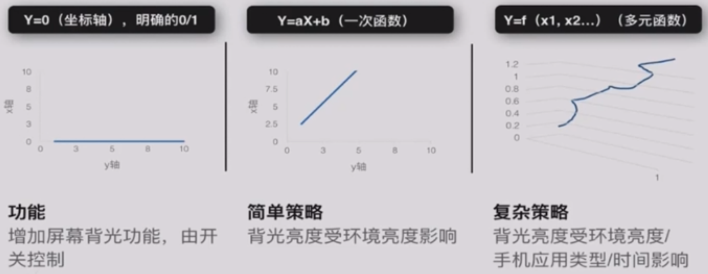
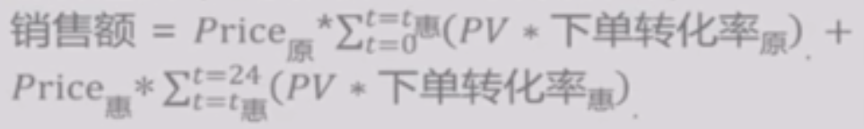
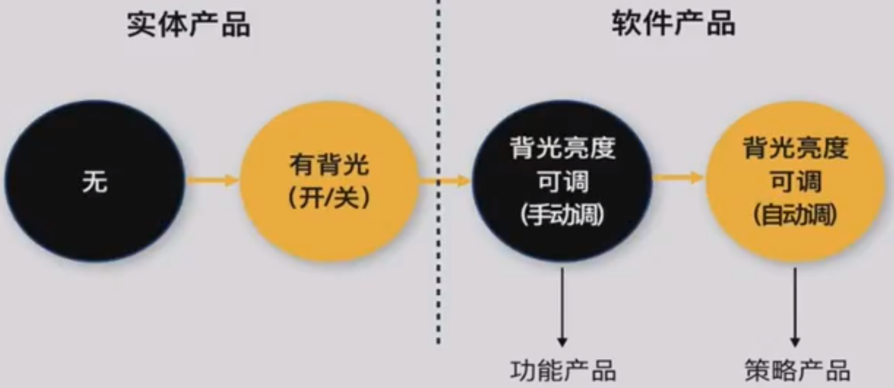
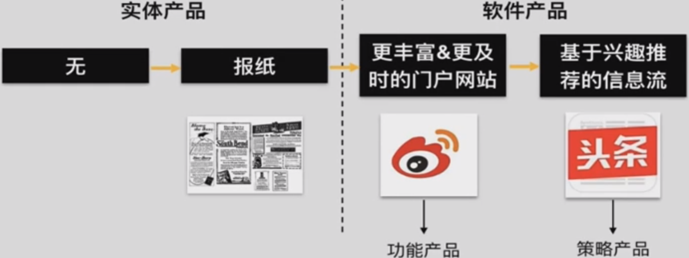
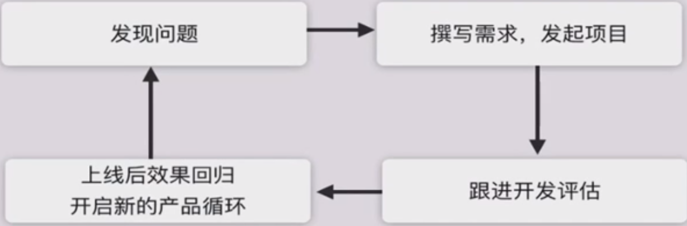
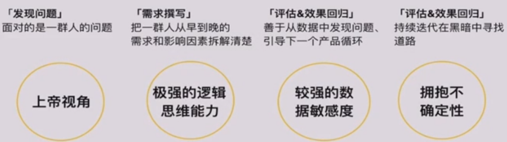

什么是策略？策略是如何诞生的？策略产品经理如何工作？
了解什么是策略
策略的特性
新闻推荐策略、增长策略、反欺诈策略、价格策略、后台策略
策略可以服务于任何一个行业、产品、形态，甚至只是一个目的
小结
策略与功能、文案、活动一样，是一种解决问题的手段
作为一种常见和有效的手段，策略时刻影响着我们每个人的生活
案例
百度地图
搜索策略
渲染策略
公交线路推荐
导航路线推荐
到达时间预估
美团
搜索策略
推荐策略
广告策略
补贴策略
配送策略
便利店
门店选址策略
选品策略
定价策略
促销策略
补货策略
汽车
自动换挡策略
ESP（刹车和动力控制）策略
DSR（下坡车速控制）策略
Pre-Safe（安全预警）策略
小结
策略无处不在
策略是一种实现目标的手段
策略的四要素
案例
电子书阅读器的阅读屏幕体验不佳如何解决？
解决手段

策略四要素
待解决问题
输入：影响解决方案的因素
计算逻辑：将输入转换成输出的规则
输出：具体的解决方案
案例
今日头条的推荐策略
待解决的问题/目标
从大量候选内容中找到用户最喜欢的内容
输入（喜欢，这件事受哪些因素影响）
该用户的特征（基础信息、历史行为）
候选内容的特征（类别、关键词）
计算逻辑（主要由策略RD开发给出）
将这些特征通过一定的计算规则转化成唯一的【喜欢度】指标
输出
按【喜欢度】从高到底排序的内容
711的商品促销策略
待解决的问题/目标
制定怎样的促销规则使该商品当日销售额最大
输入（销售额，这件事受哪些因素影响）
有多少人会来买（当日各时段人流量、不同折扣下的购买转化率）
以怎样的价格买
计算逻辑（主要有策略RD开发给出）

输出
在几点（t惠）开始设置几折优惠（Price惠）可以使毛利最大
小结
存在某类问题，该问题的最佳解决方案会受到多个因素的影响，不是恒定不变的。可以持续收集这些因素的变化，并根据变化随时调整解决方案，这种手段即为策略。
了解策略是如何诞生的
屏幕阅读体验的解决方案

获取新闻的解决方案

产品进化
硬件（实体产品）解决方案
互联网（软件产品）解决方案
看得见的功能——>看不见的策略
可以更精细地、因事因人提供不同的解决方案
小结
策略是产品持续进化的产物
爱各类消费升级中，人们希望更好更个性化的服务，策略是降低成本实现个性化的一种有效手段
了解策略产品经理的工作流程
功能与策略产品经理的差异
产品经理的基本工作流程

注意
策略是一种面向更复杂多变问题的解决手段，工作流程不可避免存在与功能产品经理的差异
发现问题
功能：一个人相对聚焦的需求
策略：一群人更多样和更有统计意义的需求
撰写需求、发起项目
功能：收敛的解决方案，通过流程和原型表达产品实现效果
策略：发散的解决方案，通过逻辑描述和效果示例表达产品实现效果
跟进开发评估
功能：更关注结果，面对开发结果是验收的性质，更关注呈现效果、而非实现过程
策略：更多参与过程，通过多轮评估深入参与开发过程，与策略rd一起发现各要素中的问题
上线后效果回归&新的产品循环
功能：更快达到理想态，面对明确单一的问题，通常可以更好地达到较好效果，close该feature的产品循环
策略：可能永无止境的产品循环，复杂且受很多因素影响的问题，需要多个产品循环才能达到较好的效果
小结
